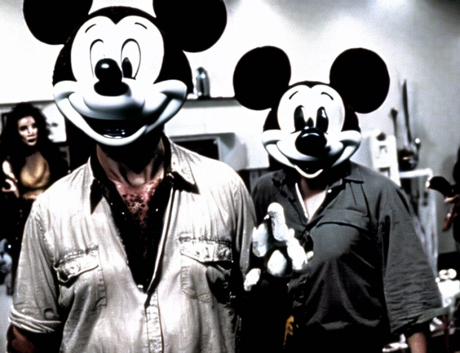

22 MR. COHN: Your Honor, I will read in pertinent part,
23 but hardly the complete document, each as redacted. It will
24 be available should the jury want it.
25 THE COURT: Very well.
7076
1 MR. COHN: Again, the first page is the caption,
2 which has over it -- and we're not doing this on the Elmo so
3 you will have to forgive us -- Patrick Fitzgerald as having
4 approved the document, and it reads as follows:
5 "Count One. From at least 1991 until the date of the
6 filing of this indictment, in the Southern District of New
7 York, in Afghanistan, the United Kingdom, the Sudan, Kenya,
8 Tanzania, Somalia, Azerbaijan, and elsewhere, out of the
9 jurisdiction of any particular state or district, Adel
10 Mohammed Abdul Almagid Abdul Bary, a/k/a Abbas, and Ibrahim
11 Hussein Abdelhadi Eidarous, a/k/a Daoud, a/k/a Abu Abdullah,
12 a/k/a Ibrahim, the defendants, together with Usama Bin Laden,
13 Ayman al-Zawahiri, and other members of and associates of the
14 groups known as al Qaeda and Egyptian Islamic Jihad, and
15 others known and unknown, unlawfully, willfully and knowingly
16 combined, conspired, confederated and agreed to kill nationals
17 of the United States in violation of Title 18," statute
18 number.
19 "f. In or about August 1995, the defendant Ibrahim
20 Hussein Abdelhadi Eidarous began organizing the Egyptian
21 Islamic Jihad cell in Baku, Azerbaijan;
22 "h. On or about March 20, 1997, the defendant Abdel
23 Mohamed Abdul Almagid Abdul Bary leased the premises known as
24 Unit 5 1a Beethoven Street, London, England;
25 "j. In or about October 1997, coconspirators in
7077
1 Afghanistan called the defendant Adel Mohammed Abdul Almagid
2 Abdul Bary;
3 "l. On or about February 20, 1998, the defendant
4 Adel Mohammed Abdul Almagid Abdel Bary leased the premises
5 known as Unit 5 1a Beethoven Street, London, England, which he
6 maintained until on or about September 23, 1998;
7 "m. Between in or about January 1998 and in or about
8 August 1998, coconspirators in Afghanistan called the
9 defendant Ibrahim Hussein Abdelhadi Eidarous;
10 "n. In or about February 1998, Usama Bin Laden and
11 Ayman al-Zawahiri, coconspirators not named as defendants
12 herein, and others issued a fatwah calling for the murder of
13 American citizens anywhere in the world, which fatwah was
14 possessed by the defendants Adel Mohammed Abdul Almagid Abdul
15 Bary and Ibrahim Hussein Abdelhadi Eidarous, in London,
16 England;
17 "o. On or about August 4, 1998, the Egyptian Islamic
18 Jihad issued a statement threatening retaliation against the
19 United States;
20 "r. On or about August 7 and August 8, 1998, the
21 defendants Adel Mohammed Abdul Almagid Abdul Bary and Ibrahim
22 Hussein Abdelhadi Eidarous assisted in the dissemination of
23 claims of responsibility for the bombings of the American
24 embassies in the name of the 'Islamic Army of the Liberation
25 of the Holy Places" to media organizations in Paris, France,
7078
1 Doha, Qatar, and Dubai, United Arab Emirates.
2 "Count Two. Conspiracy to Murder Internationally
3 Protected Persons, United States Government Employees, and
4 Others Within the Special Maritime and Territorial
5 Jurisdiction of the United States.
6 "From in or about 1991 through the date of the filing
7 of this complaint, within the special maritime and territorial
8 jurisdiction of the United States, as well as Afghanistan, the
9 United Kingdom, the Sudan, Kenya, Tanzania, Somalia,
10 Azerbaijan, and elsewhere outside the United States and
11 outside the jurisdiction of any particular state or district,
12 Abdel Mohamed Abdul Almagid Abdul Bary, a/k/a Abbas, and
13 Ibrahim Hussein Abdelhadi Eidarous, a/k/a Daoud, a/k/a Abu
14 Abdullah, a/k/a Ibrahim, the defendants, together with Usama
15 Bin Laden, Ayman al-Zawahiri, and other members of and
16 associates of the groups known as al Qaeda and Egyptian
17 Islamic Jihad, and others known and unknown, unlawfully,
18 willfully and knowingly combined, conspired, confederaaated
19 and agreed together and with each other to kill individuals."
20 Count Three is entitled "Conspiracy to Destroy
21 Buildings and Property of the United States," and I will spare
22 the Court the reading of it.
23 Count Four is "Bombing of the United States Embassy
24 in Nairobi, Kenya Resulting in More Than 200 Deaths."
25 "10. On or about August 7, 1998, in Nairobi, Kenya,
7079
1 the United Kingdom, and outside the jurisdiction of any
2 particular state or district, Adel Mohammed Abdul Almagid
3 Abdul Bary, a/k/a Abbas, and Ibrahim Hussein Abdelhadi
4 Eidarous, a/k/a Daoud, a/k/a Abu Abdullah, a/k/a Ibrahim, the
5 defendants, together with Usama Bin Laden, Ayman al-Zawahiri,
6 and other members of and associates of the groups known as al
7 Qaeda and Egyptian Islamic Jihad, and others known and
8 unknown, unlawfully, willfully and knowingly did maliciously
9 damage and destroy, and attempted to damage and destroy, by
10 means of fire and an explosive, buildings owned and possessed
11 by, and leased to, the United States, to wit, the United
12 States Embassy in Nairobi, Kenya, and as a result of such
13 conduct directly and proximately caused the deaths of at least
14 212 persons, including Kenyan and American citizens."
15 Count Five is "Bombing of the United States Embassy
16 in Dar es Salaam," and your Honor, that tracks the language of
17 the previous count and charges the two both named persons with
18 participation in the bombing of the Tanzanian -- or the United
2